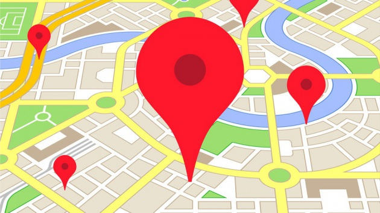

<ion-header>

  <ion-navbar>
    <ion-title>Feed</ion-title>
  </ion-navbar>

</ion-header>


<ion-content padding>

  <div *ngFor="let feed of feeds">
      <ion-card *ngIf="feed.approved">
          
          <ion-item>
              <h2>#{{ feed.id }}</h2>
              <p>{{ feed.description }}</p>
          </ion-item>

          <ion-item>
            <h2 *ngIf=" feed.priority === 'low' ">Priorità: <span style="color: green">bassa</span></h2>
            <h2 *ngIf=" feed.priority === 'high' ">Priorità: <span style="color: yellow">alta</span></h2>
            <h2 *ngIf=" feed.priority === 'critical' ">Priorità: <span style="color: red">grave</span></h2>
          </ion-item>
        </ion-card>
  </div>

    <ion-card>
    
    <ion-fab right top>
      <button ion-fab>
        <ion-icon name="pin"></ion-icon>
      </button>
    </ion-fab>

    <ion-item>
      <h2>Museum of Football</h2>
      <p>11 N. Way St, Madison, WI 53703</p>
    </ion-item>

    <ion-item>
      <h2>Institute of Fine Cocktails</h2>
      <p>14 S. Hop Avenue, Madison, WI 53703</p>
    </ion-item>

    <ion-item>
      <span item-start><ion-icon name="clock"></ion-icon></span>
      <span item-start>{{ test_date | date:'M/d/yy, h:mm'}}</span>
    </ion-item>
  </ion-card>

  <ion-fab right bottom>
    <button ion-fab color="danger" [navPush]="home" (click)="addReport()"><ion-icon name="add"></ion-icon></button>
  </ion-fab>
</ion-content>
